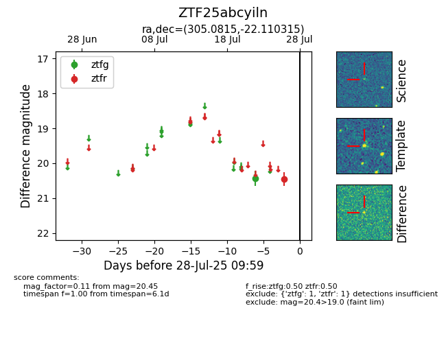

Target ZTF25abcyiln at 2025-07-28 09:59, see:
FINK: fink-portal.org/ZTF25abcyiln
Lasair: lasair-ztf.lsst.ac.uk/objects/ZTF25abcyiln
ALeRCE: alerce.online/object/ZTF25abcyiln
alt names
ZTF25abcyiln (ztf,fink)
coordinates:
equatorial (ra, dec) = (305.0815,-22.11032)
galactic (l, b) = (21.3855,-28.91201)
photometry
last ztfg=20.43, ztfr=20.45
1 ztfg, 1 ztfr detections
